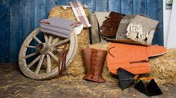
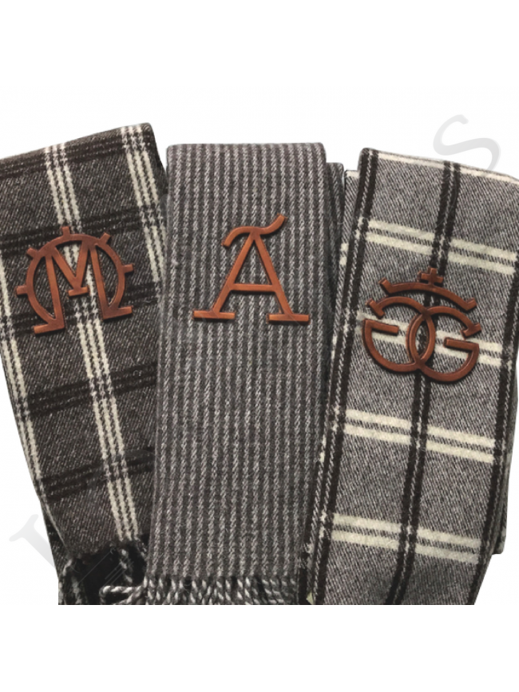

"Guarnicioneria"
La guarnicioneria es el arte de trabajar en diversos artículos de cuero o guarniciones para caballerías. Se considera guarnición a todos los elementos de la espada que sirven para sostenerla o para proteger a la mano o manos que la empuñan, así como a la fabricación o arreglo de sillas de montar de caballería, albardas y aparejos: las monturas para los caballos y las albardas y aparejos (para montar los animales) para asnos y mulos.

Se suelen usar otros materiales además del cuero, como la lona, lanas gordas denominadas estambre con las que se elaboran las guarniciones o dibujos sobre las monturas o aparejos e hilos de colores.
La persona que se dedica a la guarnicionería recibe el nombre de guarnicionero o talabartero.
